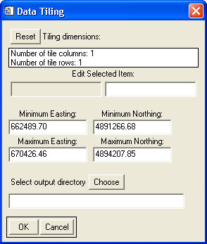

Using "Tile LAS File(s)"
This tool is meant to separate one or more data files into a specified number of tiles.

Usage:
- Select the input file(s).
- Specify the number of tile rows and columns to create. For example, if two rows and three columns are selected, six tile files will be created1.
- Input new geographic extents if a subset area is desired. The default values are the overall extents of the selected input file(s). (The resulting tiles will evenly divide the subset area.)
- Select the output directory. The output files will be in LAS format and will be named according to row and column number. (i.e. "1_1.las", "1_2.las", "2_1.las", etc.)
Back to LidarTools home page.
Notes:
- 1If the geographic extent of the input data is such that no data lies within one of the tiles, no corresponding empty output tile will be created.
- This tool requires data that are in the LAS format.
- The latitudinal and longitudinal extents of the output files will be uniform.
- This tool has been optimized to process very large files. If input data files are found to be too large to otherwise process, this tool may be used to divide them into smaller, more manageable files.
Comments?
• Idaho State University • Boise Center Aerospace Laboratory • 322 E. Front Street #240 • Boise, Idaho • 83702 •